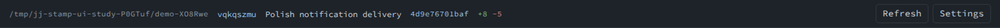
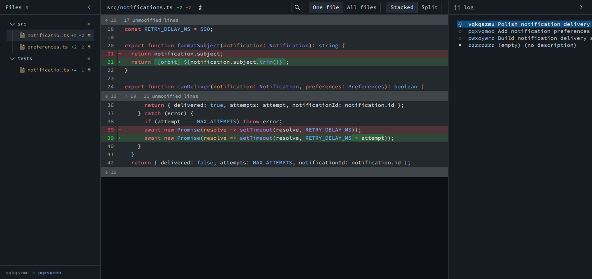
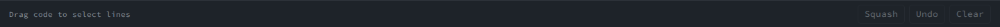

<!doctype html>
<html lang="en">
  <meta charset="utf-8" />
  <title>jj-stamp — Go to revision concepts</title>
  <style>
    @font-face {
      font-family: Source;
      src: url("../src/fonts/SourceCodePro.ttf");
    }
    * {
      box-sizing: border-box;
    }
    body {
      margin: 0;
      background: #0d1117;
      color: #c9d1d9;
      font:
        13px Source,
        monospace;
    }
    .concept {
      width: 1440px;
      margin: 0 0 32px;
    }
    .caption {
      height: 100px;
      padding: 22px 28px;
      border-bottom: 1px solid #30363d;
      background: #161b22;
    }
    .eyebrow {
      font-size: 11px;
      color: #9ac3e5;
      letter-spacing: 1.5px;
      margin-bottom: 8px;
    }
    h1 {
      font: 600 22px Source;
      margin: 0;
      color: #f0f6fc;
    }
    .screen {
      position: relative;
      height: 760px;
    }
    .capture {
      display: block;
      width: 1440px;
    }
    .top {
      height: 41px;
    }
    .workspace {
      height: 679px;
    }
    .status {
      height: 40px;
    }
    input,
    button {
      font: 13px Source;
      color: #c9d1d9;
      border: 1px solid #30363d;
      background: #161b22;
      border-radius: 4px;
      height: 29px;
      padding: 4px 10px;
    }
    button {
      cursor: pointer;
    }
    input {
      outline: none;
      border-color: #9ac3e5;
    }
    input::placeholder {
      color: #8b949e;
    }
    .jump {
      position: absolute;
      top: 6px;
      right: 192px;
      display: flex;
      gap: 6px;
      align-items: center;
    }
    .jump label {
      font-size: 12px;
      color: #8b949e;
      margin-right: 3px;
    }
    .jump input {
      width: 240px;
    }
    .primary {
      background: #25384a;
      border-color: #7197b7;
      color: #f0f6fc;
    }
    .hint {
      position: absolute;
      right: 192px;
      top: 43px;
      background: #1e2329;
      border: 1px solid #30363d;
      padding: 9px 12px;
      border-radius: 4px;
      box-shadow: 0 6px 20px #0005;
      font-size: 11px;
      color: #aab5bf;
      z-index: 1;
    }
    .footnote {
      height: 74px;
      padding: 17px 28px;
      background: #161b22;
      border-top: 1px solid #30363d;
      font-size: 13px;
      line-height: 22px;
      color: #8b949e;
    }
    .footnote strong {
      color: #c9d1d9;
      font-weight: 500;
    }
    .shade {
      position: absolute;
      inset: 41px 0 0;
      background: #0008;
    }
    .modal {
      position: absolute;
      left: 440px;
      top: 155px;
      width: 560px;
      background: #161b22;
      border: 1px solid #4b5663;
      border-radius: 8px;
      box-shadow: 0 20px 80px #0009;
      padding: 24px;
    }
    .modal h2 {
      font-size: 17px;
      color: #f0f6fc;
      margin: 0 0 24px;
    }
    .close {
      position: absolute;
      right: 20px;
      top: 19px;
      color: #8b949e;
    }
    .modal label {
      display: block;
      margin-bottom: 10px;
    }
    .modal input {
      width: 100%;
      height: 40px;
      font-size: 15px;
    }
    .help {
      color: #8b949e;
      font-size: 12px;
      margin: 10px 0 21px;
    }
    .result {
      background: #1e2832;
      border: 1px solid #3b4d5f;
      border-radius: 5px;
      padding: 15px;
      line-height: 24px;
    }
    .result small {
      display: block;
      color: #8b949e;
      font-size: 11px;
      margin-bottom: 3px;
    }
    .ids {
      color: #9ac3e5;
      font-size: 12px;
    }
    .ids span {
      color: #8b949e;
      margin-left: 18px;
    }
    .bottom {
      display: flex;
      justify-content: space-between;
      align-items: center;
      margin-top: 24px;
      font-size: 11px;
      color: #8b949e;
    }
    .bottom button {
      height: 34px;
    }
    kbd {
      font: 11px Source;
      padding: 2px 5px;
      border: 1px solid #48525d;
      border-radius: 3px;
      color: #c9d1d9;
    }
    .trigger {
      border-color: #7197b7;
    }
    .caret {
      display: inline-block;
      height: 15px;
      border-right: 1px solid #c9d1d9;
      vertical-align: middle;
    }
  </style>
  <section class="concept" id="inline">
    <header class="caption">
      <div class="eyebrow">OPTION 01 / ALWAYS AVAILABLE</div>
      <h1>Jump by ID, right in the toolbar</h1>
    </header>
    <div class="screen">
      
      
      
      <form class="jump" onsubmit="return false;">
        <label for="inline-id">Go to</label
        ><input
          id="inline-id"
          value="vqkqszmu"
          aria-label="Change ID or commit ID"
        /><button class="primary">Open ↵</button>
      </form>
      <div class="hint">Change ID or commit ID · full ID or unique prefix</div>
    </div>
    <footer class="footnote">
      <strong>Paste an ID → Enter → display its diff.</strong> The field stays
      available even when the log is hidden.<br />Most discoverable; costs
      toolbar space. Failed or ambiguous IDs show an inline message without
      changing the current review.
    </footer>
  </section>
  <section class="concept" id="dialog">
    <header class="caption">
      <div class="eyebrow">OPTION 02 / ON DEMAND</div>
      <h1>A compact “Go to revision” dialog</h1>
    </header>
    <div class="screen">
      
      
      
      <div class="jump"><button class="trigger">Go to revision…</button></div>
      <div class="shade"></div>
      <div class="modal" role="dialog" aria-labelledby="dialog-title">
        <h2 id="dialog-title">Go to revision</h2>
        <button class="close" aria-label="Close">×</button
        ><label for="modal-id">Change ID or commit ID</label
        ><input id="modal-id" value="4d9e76701baf" />
        <p class="help">Paste a full ID or a unique prefix.</p>
        <div class="result">
          <small>MATCHED REVISION</small>
          <div>Polish notification delivery</div>
          <div class="ids">vqkqszmu <span>4d9e76701baf</span></div>
        </div>
        <div class="bottom">
          <span><kbd>esc</kbd> cancel · <kbd>enter</kbd> open</span
          ><button class="primary">Open revision ↵</button>
        </div>
      </div>
    </div>
    <footer class="footnote">
      <strong
        >Click Go to revision → paste an ID → confirm the match → Enter.</strong
      ><br />Keeps the toolbar quiet; gives lookup results and errors room to
      breathe. Opening replaces the displayed review, not the working copy.
    </footer>
  </section>
</html>
